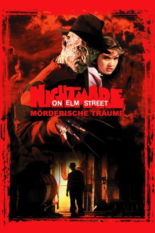

#6412 Nightmare - Mörderische Träume
Alternativ: A Nightmare on Elm Street
 
 IMDB-Wertung: 7.5 / 10
IMDB-Wertung: 7.5 / 10  Metascore: 0
Metascore: 0 
Praktisch über Nacht hält der blanke Horror Einzug in das Leben der jungen Nancy Thompson. Eines Nachts wird der hübsche Vorstadt-Teenager von einem erschreckend realen Alptraum heimgesucht: Ein narbengesichtiger Fremder mit Rasiermessern statt Fingern jagt sie durch den Heizungskeller, um sie zu massakrieren. Schreiend und schweißgebadet wacht Nancy auf und muss feststellen, dass ihr Nachthemd zerschlitzt ist! Ihre Eltern zeigen wenig Verständnis für die Schlafparanoia der Heranwachsenden, doch...
Jahr: 1984
Dauer: 91 Minuten
FSK: 16
Land: USA Studio: New Line CinemaTonspuren: DD1.0 - ,
Untertitel:
Auflösung: 1080p (1920x1080) Größe: 7424 MB
Genre: Horror
Regisseur:  Wes Craven
Wes Craven
Drehbuch: Wes Craven
Soundtrack:
Darsteller:
 John Saxon als Lt. Thompson
John Saxon als Lt. Thompson- Ronee Blakley als Marge Thompson
- Heather Langenkamp als Nancy Thompson
- Amanda Wyss als Tina Gray
 Jsu Garcia als Rod Lane
Jsu Garcia als Rod Lane Johnny Depp als Glen Lantz
Johnny Depp als Glen Lantz Charles Fleischer als Dr. King
Charles Fleischer als Dr. King Robert Englund als Fred Krueger
Robert Englund als Fred Krueger Lin Shaye als Teacher
Lin Shaye als Teacher Joe Unger als Sgt. Garcia
Joe Unger als Sgt. Garcia- Mimi Craven als Nurse
 David Andrews als Foreman
David Andrews als Foreman- Shashawnee Hall als Cop #1
- Ash Adams als Surfer #1
- Don Hannah als Surfer #2
- Leslie Hoffman als Hall Guard
 John Richard Petersen als John - Kid in Classroom , uncredited
John Richard Petersen als John - Kid in Classroom , uncredited- Chris Tashima als Boy in Nancy's English Class , uncredited
- Joseph Whipp als Sgt. Parker
- Jack Shea als Minister
- Ed Call als Mr. Lantz
- Sandy Lipton als Mrs. Lantz
- Jeff Levine als Coroner
- Donna Woodrum als Tina's Mom
- Carol Pritikin als Cop #2
- Brian Reise als Cop #3
- Paul Grenier als Tina's Mom's Boyfriend
- Kathi Gibbs als Girl in Nancy's English Class , uncredited
- Antonia Yannouli als Girl in Nancy's English Class , uncredited
Datei: X:\1984\Nightmare - Mörderische Träume (1984, FSK16, 1920x1080).mkv seit 20.06.2017
Festplatte: HD 1980-1986
 Es gibt insgesamt 46 Filme in der Gruppe '1984'
Es gibt insgesamt 46 Filme in der Gruppe '1984'